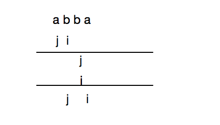

☰ 目录
002 无重复字符的最长子串
链接和考点
| LeetCode |
https://leetcode-cn.com/problems/longest-substring-without-repeating-characters/description/ |
| 考点 |
字符串， unordered_map |
| 难度 |
Medium |
题意
给定一个字符串，找出不含有重复字符的最长子串的长度。
示例：
给定 "abcabcbb" ，没有重复字符的最长子串是 "abc" ，那么长度就是3。
给定 "bbbbb" ，最长的子串就是 "b" ，长度是1。
给定 "pwwkew" ，最长子串是 "wke" ，长度是3。请注意答案必须是一个子串，"pwke" 是 子序列 而不是子串。
分析
参考
设置两个指针，j 指向不重复子串的左边，i 往右遍历。i 和j 之间的字符串不重复，且存储在 hashmap 中；
当i遇到第一个有重复的子串时, 就将j往右移1， 并将重复的字符更新为最新的；
注意： i 和 j 只能往前移动，不能往后。否则，如 “abba” 的例子：
a : 0
a : 0
b : 1
a : 0
b : 2
b : 2
a : 3
如果j可以往后，

到达最后一步， j 又跳回去了。 最大长度就是 3 了。
参考答案
时间复杂度： O(n)
空间复杂度：O(n)
#include <iostream>
#include <unordered_map>
//#include <vector>
using namespace std;
/*
reference: https://leetcode.com/problems/longest-substring-without-repeating-characters/discuss/1729/11-line-simple-Java-solution-O(n)-with-explanation
*/
template <typename T, typename U>
void print_hash(unordered_map<T, U> hashmap){
for( auto it = hashmap.begin(); it != hashmap.end(); it ++){
std::cout << it->first << " : " << it -> second << std::endl;
}
}
class Solution {
public:
int lengthOfLongestSubstring(string s) {
if(s.size() == 0)
return 0;
unordered_map<char, int> hashmap;
int maxLen = 0;
for( int i=0, j=0; i<s.size(); i++ ){
if( hashmap.count(s[i]) > 0 ){
j = max(j, hashmap[s[i]] + 1); // 2- 出现第一个重复的字母，就将左指针往右移1
hashmap.erase(s[i]); // 3- 要向插入重复的，必选先删除之前的，否则插不进去
}
hashmap.insert(std::make_pair(s[i],i) ); // 1- 将不重复的元素存到hashmap
// hashmap[s[i]] = i;
maxLen = max(maxLen, i - j + 1);
// print_hash(hashmap);
}
return maxLen;
}
};
int main() {
string s1 = "abcabcbb";
string s2 = "bbbbb";
string s3 = "pwwkew";
string s4 = "abba";
// cout << Solution().lengthOfLongestSubstring(s1) << std::endl;
// cout << Solution().lengthOfLongestSubstring(s2) << std::endl;
// cout << Solution().lengthOfLongestSubstring(s3) << std::endl;
cout << Solution().lengthOfLongestSubstring(s4) << std::endl;
std::cout<<"Hello, World!"<<std::endl;
return 0;
}
/*output:
a : 0
a : 0
b : 1
a : 0
b : 2
b : 2
a : 3
3
*/